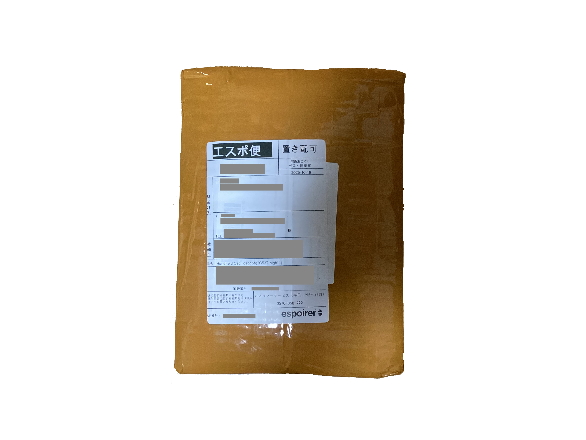
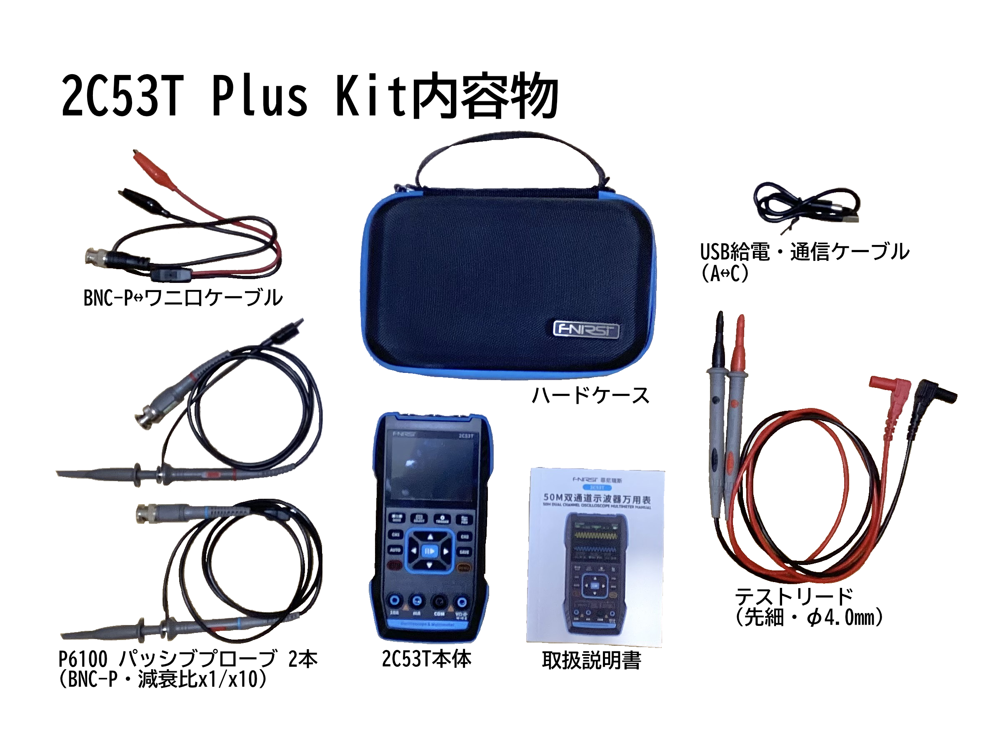

ついに，多機能計測器を買ってしまいました．
FNIRSI 2C53Tという機種です．
電子工作の界隈では有名なメーカーだと思います．
ひと昔前まではDSO-TC3というトランジスタテスタとオシロスコープをくっ付けた製品が有名だったと思います．
購入リンク→https://amzn.to/3WqtKJ7
この計測器はオシロスコープ+デジタルマルチメータ+ファンクションジェネレータというてんこ盛り構成です．
個人的にはOWON HDS200シリーズの二番煎じ的な製品と位置付けています．
OWONの方がデザイン面でも性能面でも，そしてUI面でも優れているとは思うのですが最近は3万円くらいするので手が出せません．
そこで，2C53TがAliExpressで1万円強で出品されているのを見つけて買ったということです．
まず，性能は以下の通りです．
僕の用途だと帯域幅とサンプリングレートは満足なレベルですが，やはりメモリの少なさは気になります．
それでも，値段は正義ですし，それ以外の致命的な欠点もあまりないように思えたのでヨシとします．
ちなみに以下の機能もあります．
FFT機能だけは微妙ですね．
ただ簡易的な高調波解析や波形の歪みを調べることはできそうです．
そしてMeasure機能は最近の中華ハンドヘルドオシロには標準搭載のようです．
何を表示して何を表示しないかも選べるのは良いと思います．
あと，Cursor機能は助かりますね．
なんちゃって機能ではなく，しっかりVerticalもHorizontalもCursor測定できます．
そこそこ水平軸の解像度が高いので意味をなしそうです．
これがないと困る，というかCursor機能があるものを選んだので，この機能の完成度が気になります．
とても楽しみです．
届くまで気長に待ちます．
購入から1週間後，AliExpressからエスポ便で荷物が届きました．
10月18日に購入して10月27日に到着したのでそれなりに早いのではないかと思います．
まず，開封をしますがおなじみのグルグルテープ梱包でした．
これ，リサイクルできなくて勿体ないなぁ，とつくづく感じる点はありますが防水の意味もありそうですし目をつぶりましょう．
今回は，エスポ便ということでChina Postではないので箱をボコられることもなく，まぁきれいな状態で届きました．

中を見てみます．(化粧箱の写真はありません)
今回は少しお金を多く払って，Plusキットを購入したのでパッシブプローブ(受動プローブ)が2本付属しています．
またテストリードも先端がチョンチョンに尖ったものなので扱いには気をつけた方が良さそうです．
オシロのパッシブプローブはそこまで品質が良いわけじゃないですが，まぁ及第点だとは思います．
一応，カラーリング(プローブに取り付ける識別用の輪っか)も調節のドライバーもついているので(画像範囲外)，届けばすぐに使えます．

付属品の品質はどれも「まぁ，及第点かな」という程度なのであまり期待しない方がいいと思います．
というか，期待してはいけません．
割引ありとはいえ1万円と少しで購入しています．
天下のTektronixのパッシブプローブは1本で18,000円します．
プローブ1本の値段で負けているので，付属品は気にしないことにします．
本体の品質は驚くほど良かったです．
成形のバリもなく，画面の保護フィルムも綺麗に貼られていました．
まず，ファームウェアの更新をします．
FNIRSIのサイトに行き，該当するファームウェアのZIPファイルをダウンロードします．
ローカル上で解凍し，中にあるバイナリファイル(.bin)のみを使用します．
そして，2C53Tを何も接続していない状態でMENUキーを押しながら電源を入れます．
すると画面上にFIRMWARE UPDATEと表示されるので，そのタイミングでUSB通信ケーブルを使ってコンピュータに接続します．
先ほど用意したバイナリファイルをUSBメモリに書き込む要領でドラッグ&ドロップすればアップデート完了です．
(ちなみに，万が一アップデートに失敗したらFNIRSIに連絡しろ，と説明書に書いてあります)
機能ごとの詳細は各記事をご覧ください．